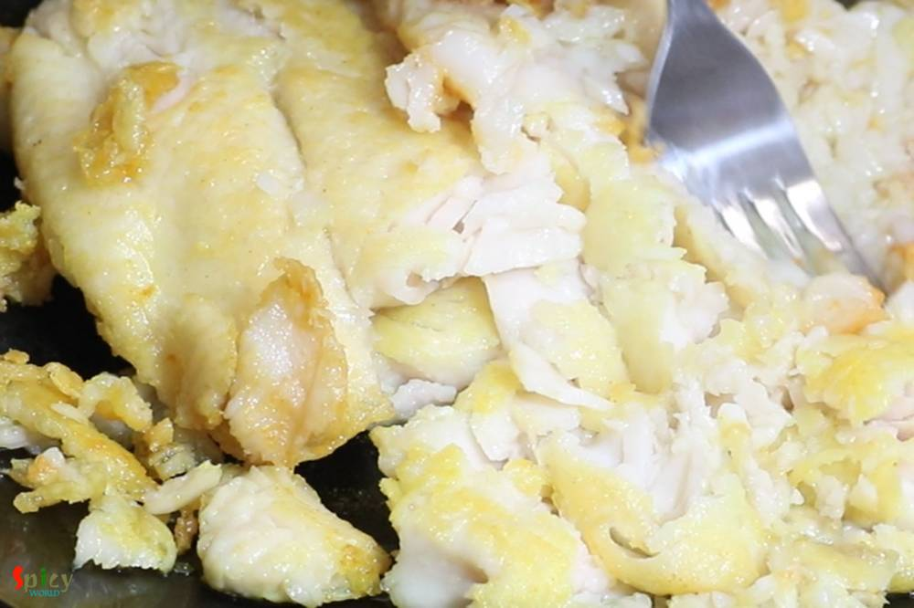
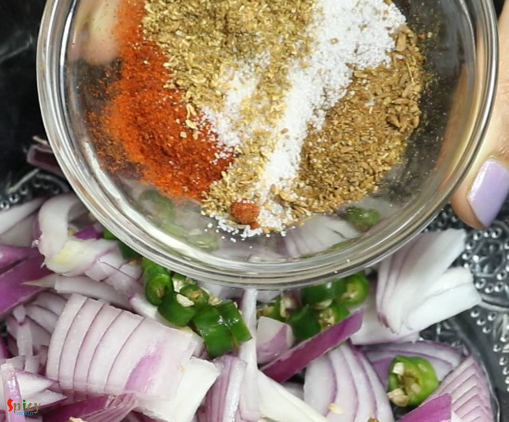
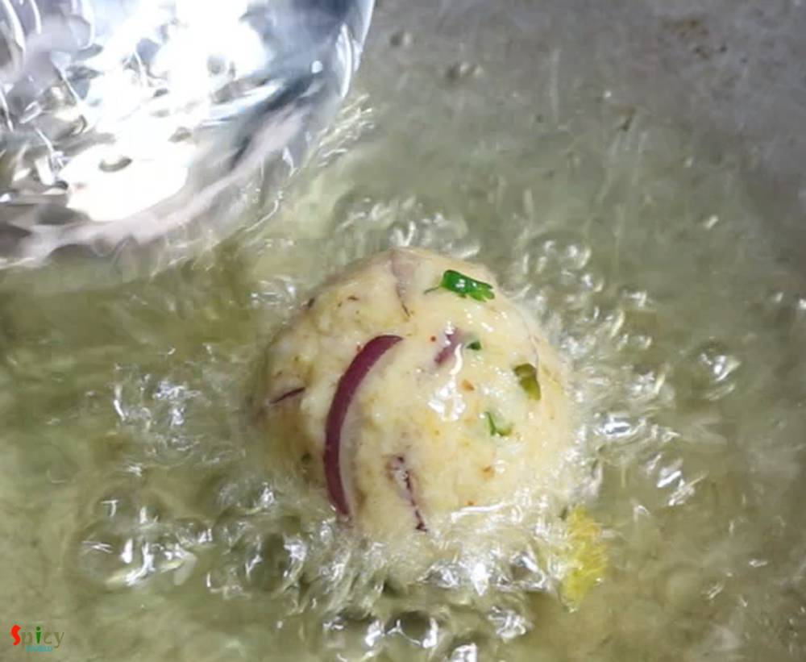
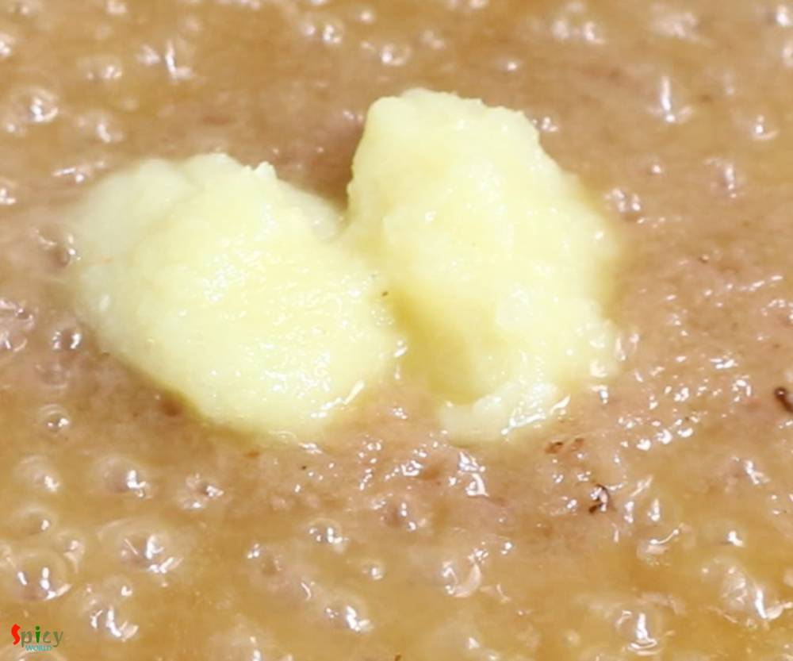
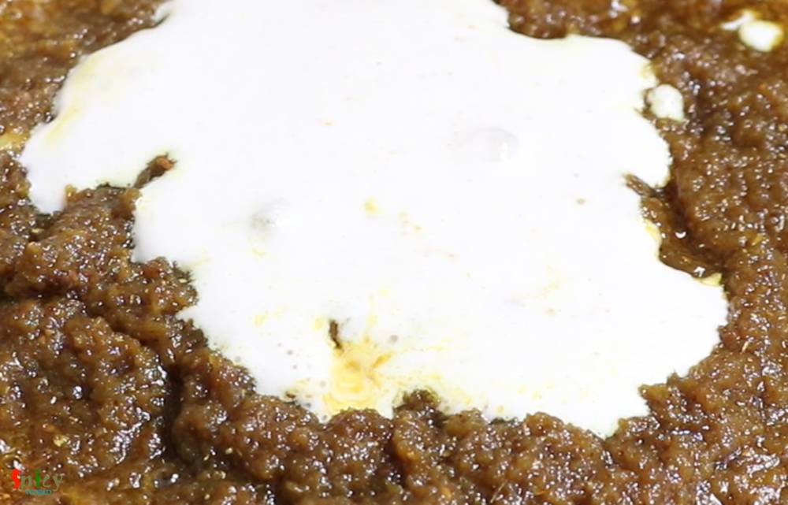

Simple and Easy Recipes
Fish Kofta Curry - party style !
© 2016 Spicy World, Published on: Mar 22, 2019
We all know what Kofta is. Kofta is almost like meatball but it is deep fried and light in weight. Last weekend one of my friend came over for dinner with her family. I cooked few dishes, one of them was this Fish Kofta Curry. Deep fried Fish balls will be cooked in a rich and creamy sauce. I got very positive feedback from everybody. Fish Kofta curry tastes awesome with fried rice, plain steamed rice or pulao. Try this delicious recipe in your kitchen and let me know how it turned out for you.

Ingredients
- For Kofta:
- Half kg of any white fish. (rohu, swai, basa)
- 1 Teaspoon of salt and 1 Teaspoon of turmeric powder.
- 1 small onion, sliced or chopped.
- 1 Tablespoon of ginger garlic paste.
- 2 green chilies, chopped.
- Spice powder (1 Teaspoon of red chili powder, 1 Teaspoon each of roasted cumin and coriander powder).
- Some chopped coriander leaves.
- Juice of half of a lemon.
- Salt as per your taste.
- 1/4th cup of bread crumbs.
- 1 egg.
- 2-3 Tablespoons of cornflour if needed.
- Half cup of cooking oil for frying.
- For Gravy:
- Smooth paste of 1 medium onion.
- 2 Tablespoons of ginger garlic paste.
- 1 medium tomato, puree.
- Smooth paste of 5-6 cashews.
- Spice powder 1 Teaspoon each of (turmeric powder, red chili powder, kashmiri chili powder, roasted cumin and coriander powder).
- Salt and sugar as per your taste.
- 1 and half cups of hot water.
- 4 Tablespoons of fresh heavy cream.
- 3-4 slitted green chilies.
- Some fried onion or beresta.
- Some chopped coriander leaves.
- Cooking oil as required.


Steps
Rub some salt and turmeric powder all over the washed fish pieces.
Heat 4-5 Tablespoons of oil in a kadai or pan.
Fry the fish pieces for 5 minutes by changing the sides.
Then take them out from oil.
With the help of a fork, crumble the fried fish. If you are using with bone fish then discard the skin and bones.
In a separate bowl, add onion slices, chopped green chilies, some salt, all of the spice powder and chopped coriander leaves. Mix well for 1-2 minutes.
Then add ginger garlic paste and lemon juice.

Add crumbled fish, bread crumbs and an egg. Mix everything very well with your hand.

If the mixture needs more binding then add the cornflour, mix well.
Now take a small portion from the mixture and make lemon size ball.
Heat oil in a kadai, put that one kofta in very hot oil.
Splash some hot oil on it from sides, if it is not breaking that means the binding of the mixture is alright.
Put the flame on medium and fry until it become golden in color. It will take 5 minutes.
Fry all of the koftas like this way, then take them out from oil.
For the gravy, in that remaining oil add 3 Tablespoons of more oil.
Add onion paste in hot oil, fry for 7 minutes on medium flame.
Add ginger garlic paste, cook for 3 minutes.
Then add all of the spice powder, mix well for 3-4 minutes.

Then add the cashew nut paste. Cook on medium flame for 5 - 7 minutes.
Add tomato puree, mix well and cook for 5 minutes.

Add some salt and sugar as per your taste, mix well.
Then add hot water, mix well.
When the gravy starts bubbling, add all of the fried koftas.

Mix and cook for 5 minutes by covering the pan.
After that, add heavy cream, slitted green chilies, chopped coriander leaves and beresta or fried onion.

Give a very gentle mix and then turn off the heat.

Your Fish Kofta Curry is ready ...
Serve this hot with fried rice or Pulao ..
")